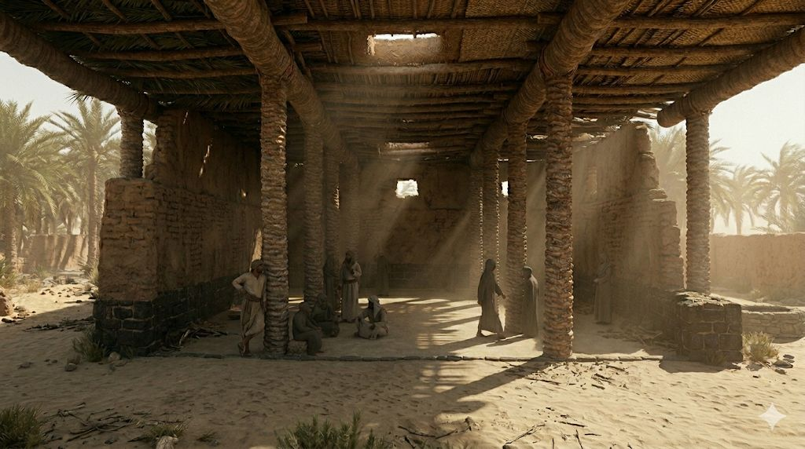

سقيفة بني ساعدة Saqifat Bani Sa'idah
مَظَلَّة لبني ساعدة من الخزرج، اجتمع فيها كبار الصحابة من المهاجرين والأنصار بُعَيد وفاة النبيّ ﷺ، فدار بينهم حوار مصيري انتهى بمبايعة أبي بكر الصدّيق رضي الله عنه خليفةً للمسلمين — في أوّل انتقال للسلطة في الإسلام. مَدار يُعيد بناء السقيفة بأعمدتها من جذوع النخل وسقفها من الجريد، ويسرد الحوار التاريخي بأصوات مميَّزة لأبي بكر وعمر وأبي عبيدة وسعد بن عبادة رضي الله عنهم. A palm-frond shelter of the Banu Sa'idah clan of the Khazraj, where the senior Companions — Muhajirun and Ansar — gathered just after the Prophet's ﷺ passing. The deliberation that followed ended with the pledge of allegiance to Abu Bakr As-Siddiq (RA) as the first caliph — the first transfer of authority in Islam. Medar reconstructs the shelter with its palm-trunk pillars and frond roof, and dramatizes the historic dialogue through distinct voices for Abu Bakr, Umar, Abu Ubaidah, and Sa'd ibn Ubadah (RA).